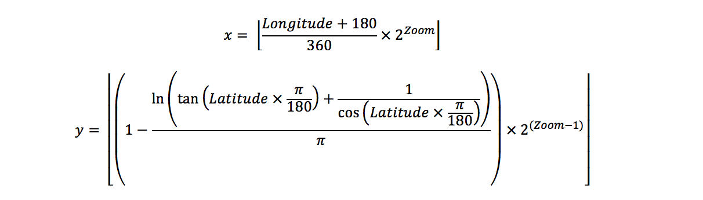

Problem made by Lockheed Martin, is CodeQuest 2017 Problem 9
This problem has a difficulty of 45
In today’s world of GPS, mobile networks, and the multitude of mapping tools that work on everything from your car to your phone, you are never more than a tap or click away from seeing a map of where you are anywhere on the globe. To make this possible, mapping tools break the world up into small images called tiles.
These tiles represent the satellite and map imagery, and are organized by what part of the world they show and at what zoom level they show it. To support all the different app developers, most satellite and map imagery suppliers have tile servers that provide access to the map tiles from any standard HTTP/S (web) connection. The map tiles themselves are always 256 x 256 images and the size of the world they cover depends upon the zoom level they represent.
• At a zoom level of 0, one tile image represents the entire world.
• At a zoom level of 1, the world is represented by a 2x2 grid of tile images (for a total of 4 tiles).
• At a zoom level of 2, the world is represented by a 4x4 grid of tile images (for a total of 16 tiles).
• At a zoom level of N, the world is represented by x grid of tile images (for a total of tiles).
Accessing a particular tile from a satellite or map imagery provider is usually as easy as following a standard URL format. The most common format uses a directory structure where the first folder is the zoom level, followed by the x coordinate with the y coordinate being the name of the tile image.
The following example is a URL to download a tile from OpenStreetMap (an open data, community driven, map data provider). In the example below, z is the zoom level of the map tile and x, y are the Web Mercator projection of the Longitude and Latitude adjusted for the specified zoom level.
http://tile.openstreetmap.org/z/x/y.png
Mercator projection is a method of projecting the world onto flat surface (such as a map). Originally, it was the standard projection used for nautical navigation charts and a variant of it, called Web Mercator, continues to see use today in most mapping tools.
The following formulas convert Longitude and Latitude to the tile server x, y values:

Note: x and y will always be integers. Discard the decimal component to round down to the nearest integer.
Your company is working on a new mobile app, you have been asked to write the code that will convert a file containing a list of zoom levels and associated GPS coordinates into URLs to download the corresponding map tile from OpenStreetMap.
The first line of the file Prob09.in.txt will contain a positive integer T denoting the number of test cases that follow. Each test case will have the following input:
• A single line containing zoom level followed by a space, the latitude followed by a space, and finally the longitude.
3
13 39.555434 -105.162969
16 40.689145 -74.044411
15 -33.856922 151.215042
For each GPS coordinate, output the URL (one URL per line) to download the associated tile image using the OpenStreetMap URL above (http://tile.openstreetmap.org/z/x/y.png).
http://tile.openstreetmap.org/13/1702/3114.png